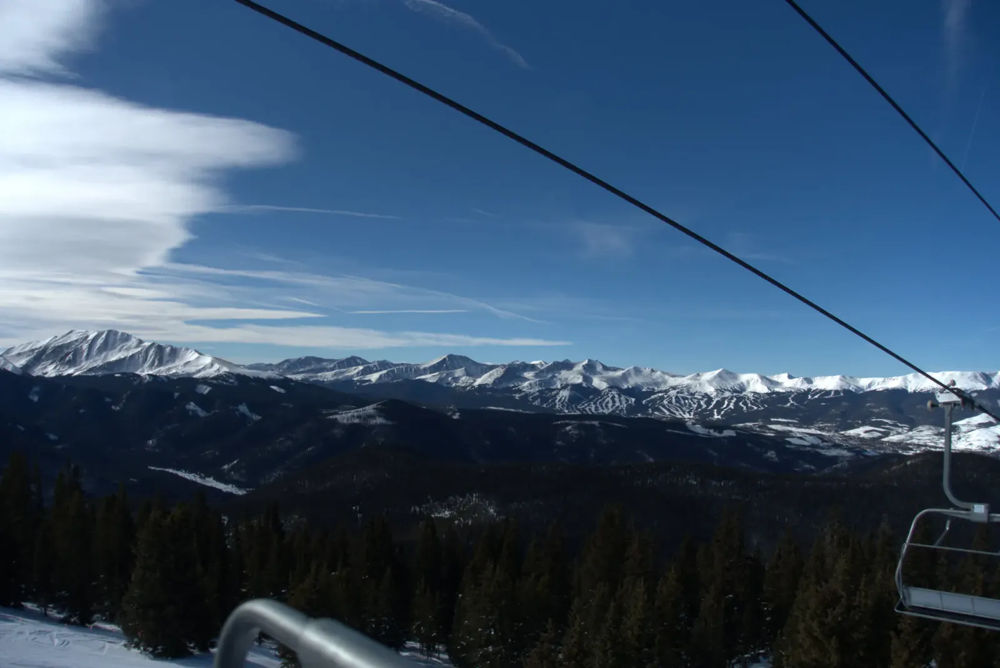

Mountain Time
One November evening in Summit County, the clouds above the highway blazed orange, and I shot them through the windshield. A few weeks later the drive over the pass went from canyon fog to blinding sun to a full whiteout in under ten minutes, and a rubber duck on the dash rode it all out! Before you drive up in winter, check COtrip, because conditions change faster than any forecast. Same problem as my old snowboarding post: a camera is hard to carry down a mountain, so many of these are phone pictures from the car or the chairlift.
Most of that winter was Keystone, with a few days at Breckenridge. One January day a wave cloud hung over the peaks. When wind pours over a range, the air ripples up and down behind it like water behind a boulder, and a cloud forms wherever a ripple lifts and cools it. The ripple stays put, so the cloud does too. Across the valley, ski runs scored pale lines down a dark range. A few days later, on a sunny ridge, gray snags looked out over valleys running toward far white ranges. Then came a weekend in late March. On Friday the crags stood bare and streaked with snow in hard blue light. On Saturday evening the sky over frozen Dillon Reservoir went from orange to violet as the lights came on in the valley below. By Sunday I was in Vail, looking, I think, at the Gore Range again from the other side.


The next winter, on a December evening, I stopped at Red Rocks Park on the way home, a short detour off I-70. The sandstone slabs had gone dusty rose under a fading blue sky, with a boulder balanced on top of one stack. February brought a clear Saturday up in Keystone's high bowls. In May there was still deep snow at Winter Park and on the ridges west of Breckenridge, where a cornice, a lip of wind-packed snow, curled off the crest. A cornice hangs out past where the ridge ends, so keep well back from the edge. Spring 2025 brought low cloud in early March, blue sky and corduroy at Breckenridge on the 25th, and white on white by early April. Go back often enough and you stop collecting views and start learning moods.